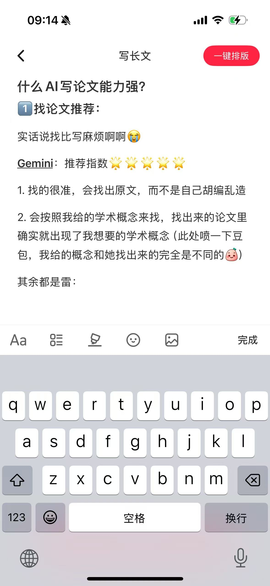
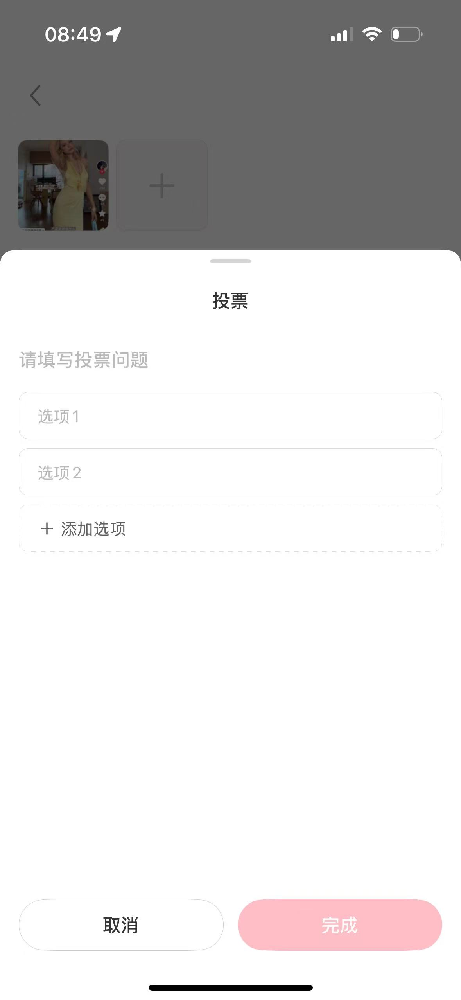
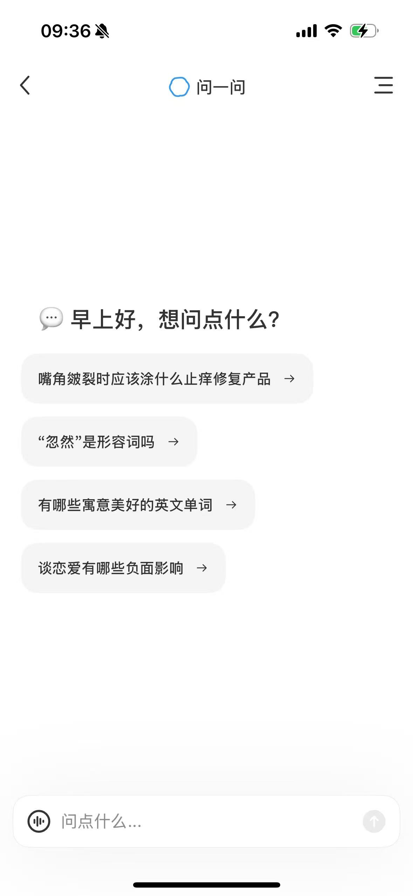

发布前合规预检助手 · 前端设计规范
本规范从三张参考截图与 logo 中提取，沿用小红书原生「写长文」编辑器与「问一问 AI」的视觉语言。所有组件、字体字号、配色均与截图 1:1 对齐，供后续 React + Vite + Tailwind 实现照此落地。
React + Vite + Tailwind CSS
iOS 原生风格
移动端优先
v1.0 · 2026-05-30
01
基础规范
字体、字号阶梯与组件库选型。截图均为 iOS 原生界面，故以苹方 + SF Pro 为基准。
字体 Typeface
| 语言 | 字体 | CSS font-family 声明 | 用途 |
|---|
| 中文 | PingFang SC（苹方） | "PingFang SC" | 标题、正文、按钮、气泡全部中文 |
| 英文/数字 | SF Pro Text / Display | -apple-system, BlinkMacSystemFont | 状态栏数字、英文（Gemini/GPT 等） |
| 等宽 | SF Mono | "SF Mono", ui-monospace | 仅文档/代码标注（产品界面不用） |
推荐统一声明：
font-family:-apple-system,BlinkMacSystemFont,"PingFang SC","SF Pro Text","Helvetica Neue",sans-serif;
—— 在 iOS Safari 上自动命中系统苹方，无需打包字体文件，体积为 0。
字号 / 字重阶梯 Type Scale
Title L · 标题
22px / 600 / 1.4
什么 AI 写论文能力强？
Greeting · 开场大标题
26px / 700 / 1.35
早上好，想问点什么？
Nav Title · 导航标题
17px / 600
写长文
Body · 正文
16px / 400 / 1.85
实话说找比写麻烦啊啊
Chip / 选项
16px / 400
想推荐一个最好用的 AI
Button · 按钮
15–17px / 500–600
一键排版 · 完成
Caption · 说明
13–14px / 400
备选 · 表达层方案
组件库选型 Component Stack
策略：界面组件以「手写还原」为主（下方 04 节的 C-01~C-09 全部自建为项目内 React 组件，样式复用本规范的设计变量），仅引入 3 个“难自己写”的底层库。依赖最少、最贴截图、可控性最强。
| 层 | 选型 | 负责什么 / 怎么用 |
|---|
| 界面组件 | 项目自建（手写）primary | 导航栏、按钮、工具栏、气泡、意图选项、结果卡、输入框等 —— 全部自己写成 @/components/*，按截图 1:1 还原，用 Tailwind + 本规范设计变量。不依赖外部 UI 库。 |
| 半屏弹层 | react-modal-sheet detent | 只用它的行为：medium detent（约 2/3 屏高）、拖拽把手下拉关闭、遮罩点击关闭。把手/圆角/标题等外观再用本规范样式覆盖。 |
| 动画 | Framer Motion | 弹层滑入/滑出、气泡流式出现、选项高亮过渡，保证 NFR-1（<500ms、流畅）。 |
| 图标 | Lucide React + 自定义 SVG | 工具栏描边图标（列表/标记笔/表情/图片）用 Lucide；「问一问」入口用项目自带 logo_vector.svg。 |
为什么不引入 Konsta UI / Ant Design Mobile / Vant：没有任何现成库装上就是「小红书原生」的样子，都得二次覆写。既然终归要覆写，不如直接手写界面组件——避免和库的默认样式打架，依赖也更轻。只保留弹层行为、动画、图标这三个自己写起来最费劲的库。
02
配色规范
从截图取色：品牌主红、问一问蓝、以及一组中性灰阶。已写入 CSS 变量，可直接映射到 Tailwind theme.extend.colors。
03
图片与 Logo
三张参考大图为还原基准；「问一问」入口 logo 已由项目方做好，直接使用 Frontend/logo_vector.svg。
「问一问」入口 Logo
logo_vector.svg · 蓝色矢量描边花瓣形
主色 #017AFC · 工具栏内呈现尺寸约 26×26px
放置位置：底部排版工具栏「图片」与「完成」之间。
参考大图

页面 A · 创作页「写长文」编辑器：导航栏 / 标题 / 正文 / 底部工具栏

弹层形态 Modal Bottom Sheet：把手 / 居中标题 / 表单 / 取消·完成

问一问内容 开场大标题 / 灰底选项气泡 / 底部输入框
04
组件清单（按截图 1:1 还原）
下列组件全部用本规范的设计变量绘制，与三张截图同形同色同字号。开发时即以这些为基准映射到 Konsta UI / 自定义组件。
C-01 顶部导航栏
创作页：返回 ‹ · 居中标题 · 右侧红色主按钮「一键排版」
问一问页：返回 ‹ · 蓝色 logo + 标题 · 右侧菜单（三横线）
C-02 按钮
胶囊圆角 999px。主按钮主红填充白字；禁用态用浅粉 #FBC4CC；次按钮白底描边。
C-03 标题 + 正文（创作页）
什么 AI 写论文能力强？
找论文推荐：
实话说找比写麻烦啊啊
Gemini：推荐指数 五星
1. 找的很准，会找出原文，而不是自己胡编乱造
标题 22px/600；正文 16px/400，行高 1.85，支持 emoji 与下划线强调。
C-04 底部排版工具栏 （含「问一问」入口）
从左到右：Aa（字体）· 列表 · 标记笔 · 表情 · 图片 · 问一问（蓝色 logo，新增） · 完成。图标描边灰 #3A3A3A，问一问保留品牌蓝。
C-05 半屏弹层 头部
Modal Bottom Sheet（medium detent ≈ 2/3 屏）：圆角 20px · 顶部拖拽把手 40×5px · 居中标题 17px/600 · 背后页面变暗遮罩。
C-06 开场大标题 + 意图选项
我已读完你的笔记
先确认下，你最想让读者 get 到的是什么？
想推荐一个最好用的 AI →
想做多个 AI 的横向对比 →
只想分享自己的真实使用感受 →
开场大标题 26px/700。意图选项：灰底 #F4F4F5 圆角 14px，选中态描蓝边 #017AFC + 浅蓝底，右侧 → 箭头。选项动态生成、随帖变化。
C-07 AI 两段式结果卡
命中哪条规则
这篇可能触及「笔记营销 · 拉踩测评」相关规则。平台关注的是：是否以贬低部分产品来抬高另一产品，以及是否有针对具名产品的情绪化、绝对化负面评价。
改进方向
你的核心诉求其实是推荐那个最好用的，多产品对比只是手段。建议直接去掉对比结构：① 只保留你真正想推荐的产品并讲透「为什么好」；② 用过但不推荐的，不必逐个点名贬低，不写即可。
白底卡片 + 描边，两段以虚线分隔。小标题 16px/600；正文 15px，关键结论用 #FFF4D6 浅色高亮。支持流式逐字显示。
C-08 底部输入框
胶囊输入框：左侧语音/输入图标 · 占位「问点什么…」· 右侧圆形发送按钮（↑），有内容时变红。
C-09 弹层表单字段 + 底部动作
实线字段 #EBEBEB 描边圆角 12px；新增项用虚线框；底部「取消（白底描边）/ 完成（主红，未填时浅粉禁用）」并排。
设计规范基于 Frontend/ 三张参考图与 logo_vector.svg 提取 · 用于 Task 2–4 的 UI 实现基准